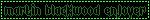

we're so back
i've been having a craving to journal again. i don't know how long this craving will last. this blog page will probably disappear again at some point, as it has time and time before—a little submarine surfacing then and again, drifting calmly, amidst the fish and the kelp, just under the most terrible of floods. the periscope lifts, now, and hooks itself on the fresh air before, somewhen, it loses purchase and tumbles slowly back into the depths.
i'm feeling rather stressed. it has taken me great pains to come to terms with the fact that i have not suddenly developed rabies or something, but i am, in fact, a breathing person who is feeling rather stressed. i'd not been the most "on top" of the college search, and it's biting me in the ass quite a bit now. it's not dangerously bad, far from it, but i do need to get my act together and my applications finalized. it's times like these that i curse my difficulties with productivity and timeliness... in short: i need adderall or something this can't be how people do it.
i've been getting really into the magnus archives recently, and by "getting really into", i mean "listening to it nearly every single moment i'm not actively doing something else". it's put some sort of spell on me where the only thing i can do is listen to my silly little podcasts while kicking my legs and giggling stupidly.
the magnus archives, for those who are unaware, (pitch incoming) is a horror-mystery fiction podcast. it follows the magnus institute's recently instated head archivist jonathan sims as he attempts to organize the institute's file archive, which has been left in a state of complete disarray by the previous archivist. the episodes take the form of individual "statements", 15-20 minute testimonies concerning encounters with the supernatural, read aloud by the frequently interrupted archivist as he converts them to audio format. as the episodes progress and their loose threads begin to converge, the archivist and his assistants find themselves caught, like so many flies, in a vast web of conspiracy and unknowable forces. i highly highly recommend checking it out (although do be warned that it's a slow burn and things only really start moving around episode 20-ish (but GOD GOD GOD IT GETS GOOD!!!!! AH HA HA HA!!!!)). yadda yadda monsters gripping mysteries etc but also the characters are all very fucking good and it invented martin blackwood so everyone should listen to it right now i think.


also that OTHER MOTHERFUCKER fucking FAVORITE moment of all time college can WAIT i have magnus archives to listen to ‼️ i'm sure the admissions officers will understand
i started writing this in a really midcentury british author voice for some reason. good night!